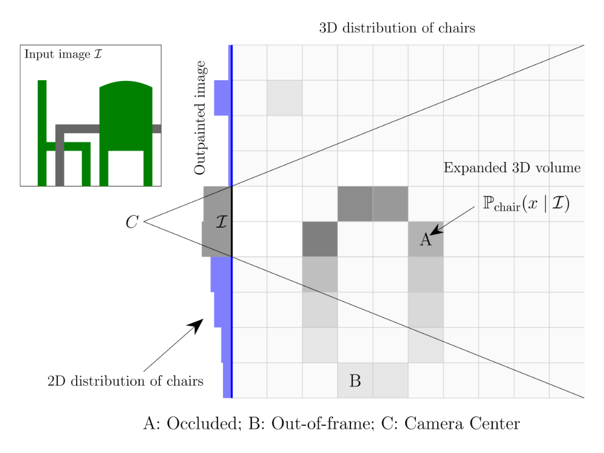

Believing is Seeing: Unobserved Object Detection using Generative Models
Abstract
Can objects that are not visible in an image---but are in the vicinity of the camera---be detected? This study introduces the novel tasks of 2D, 2.5D and 3D unobserved object detection for predicting the location of nearby objects that are occluded or lie outside the image frame. We adapt several state-of-the-art pre-trained generative models to address this task, including 2D and 3D diffusion models and vision--language models, and show that they can be used to infer the presence of objects that are not directly observed. To benchmark this task, we propose a suite of metrics that capture different aspects of performance. Our empirical evaluation on indoor scenes from the \rk and \nyu datasets demonstrate results that motivate the use of generative models for the unobserved object detection task.
Resources
Usage
Once released, detailed instructions for running the experiments and reproducing results will be provided.
Cite As
@misc{bhattacharjee2024believing,
title={{Believing is Seeing}: Unobserved Object Detection using Generative Models},
author={Subhransu S. Bhattacharjee and Dylan Campbell and Rahul Shome},
year={2024},
eprint={2410.05869},
archivePrefix={arXiv}
}